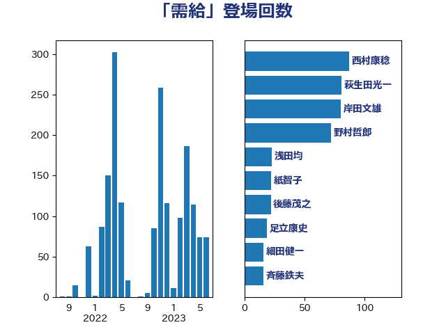

単語「需給」

| 野上浩太郎 | 自由民主党 | 91 回 |
| 萩生田光一 | 自由民主党 | 84 回 |
| 田村憲久 | 自由民主党 | 49 回 |
| 岸田文雄 | 自由民主党 | 29 回 |
| 梶山弘志 | 自由民主党 | 25 回 |
| 宮本徹 | 日本共産党 | 23 回 |
| 後藤茂之 | 自由民主党 | 16 回 |
| 細田健一 | 自由民主党 | 16 回 |
| 足立康史 | 日本維新の会 | 16 回 |
| 舟山康江 | 国民民主党 | 15 回 |
| 川田龍平 | 立憲民主党 | 14 回 |
| 武部新 | 自由民主党 | 14 回 |
| 田名部匡代 | 立憲民主党 | 14 回 |
| 山田俊男 | 自由民主党 | 13 回 |
| 玉木雄一郎 | 国民民主党 | 13 回 |
| 中野洋昌 | 公明党 | 11 回 |
| 秋本真利 | 自由民主党 | 11 回 |
| 稲津久 | 公明党 | 11 回 |
| 宮口治子 | 立憲民主党 | 10 回 |
| 山岡達丸 | 立憲民主党 | 10 回 |
| 石井正弘 | 自由民主党 | 10 回 |
| 田村まみ | 国民民主党 | 9 回 |
| 石橋通宏 | 立憲民主党 | 9 回 |
| 神田潤一 | 自由民主党 | 9 回 |
| 神谷裕 | 立憲民主党 | 9 回 |
| 紙智子 | 日本共産党 | 9 回 |
| 緑川貴士 | 立憲民主党 | 9 回 |
| 石垣のりこ | 立憲民主党 | 8 回 |
| 簗和生 | 自由民主党 | 8 回 |
| 中川郁子 | 自由民主党 | 7 回 |
| 田村貴昭 | 日本共産党 | 7 回 |
| 菅義偉 | 自由民主党 | 7 回 |
| 古屋範子 | 公明党 | 6 回 |
| 吉田統彦 | 立憲民主党 | 6 回 |
| 小林鷹之 | 自由民主党 | 6 回 |
| 石川香織 | 立憲民主党 | 6 回 |
| 音喜多駿 | 日本維新の会 | 6 回 |
| 高橋克法 | 自由民主党 | 6 回 |
| 打越さく良 | 立憲民主党 | 5 回 |
| 斉藤鉄夫 | 公明党 | 5 回 |
| 梅村聡 | 日本維新の会 | 5 回 |
| 浜野喜史 | 国民民主党 | 5 回 |
| 細田博之 | 自由民主党 | 5 回 |
| 中野英幸 | 自由民主党 | 4 回 |
| 宗清皇一 | 自由民主党 | 4 回 |
| 小寺裕雄 | 自由民主党 | 4 回 |
| 山崎誠 | 立憲民主党 | 4 回 |
| 山際大志郎 | 自由民主党 | 4 回 |
| 岩田和親 | 自由民主党 | 4 回 |
| 杉久武 | 公明党 | 4 回 |
| 河野義博 | 公明党 | 4 回 |
| 浅野哲 | 国民民主党 | 4 回 |
| 西村智奈美 | 立憲民主党 | 4 回 |
| 鈴木憲和 | 自由民主党 | 4 回 |
| 須藤元気 | 無所属 | 4 回 |
| 五十嵐清 | 自由民主党 | 3 回 |
| 倉林明子 | 日本共産党 | 3 回 |
| 大塚耕平 | 国民民主党 | 3 回 |
| 太田房江 | 自由民主党 | 3 回 |
| 宮崎雅夫 | 自由民主党 | 3 回 |
| 宮本周司 | 自由民主党 | 3 回 |
| 山下雄平 | 自由民主党 | 3 回 |
| 山口壯 | 自由民主党 | 3 回 |
| 平山佐知子 | 無所属 | 3 回 |
| 柴田巧 | 日本維新の会 | 3 回 |
| 水岡俊一 | 立憲民主党 | 3 回 |
| 江島潔 | 自由民主党 | 3 回 |
| 浅田均 | 日本維新の会 | 3 回 |
| 浜田聡 | NHK党 | 3 回 |
| 田嶋要 | 立憲民主党 | 3 回 |
| 石井章 | 日本維新の会 | 3 回 |
| 穀田恵二 | 日本共産党 | 3 回 |
| 笠井亮 | 日本共産党 | 3 回 |
| 落合貴之 | 立憲民主党 | 3 回 |
| 赤羽一嘉 | 公明党 | 3 回 |
| 里見隆治 | 公明党 | 3 回 |
| 長谷川淳二 | 自由民主党 | 3 回 |
| 伊藤渉 | 公明党 | 2 回 |
| 佐藤啓 | 自由民主党 | 2 回 |
| 務台俊介 | 自由民主党 | 2 回 |
| 北村経夫 | 自由民主党 | 2 回 |
| 吉川ゆうみ | 自由民主党 | 2 回 |
| 安達澄 | 無所属 | 2 回 |
| 小山展弘 | 立憲民主党 | 2 回 |
| 小野田紀美 | 自由民主党 | 2 回 |
| 山口俊一 | 自由民主党 | 2 回 |
| 山本博司 | 公明党 | 2 回 |
| 山本左近 | 自由民主党 | 2 回 |
| 岩渕友 | 日本共産党 | 2 回 |
| 平林晃 | 公明党 | 2 回 |
| 末次精一 | 立憲民主党 | 2 回 |
| 東国幹 | 自由民主党 | 2 回 |
| 柳ヶ瀬裕文 | 日本維新の会 | 2 回 |
| 根本幸典 | 自由民主党 | 2 回 |
| 梅村みずほ | 日本維新の会 | 2 回 |
| 榛葉賀津也 | 国民民主党 | 2 回 |
| 泉健太 | 立憲民主党 | 2 回 |
| 滝波宏文 | 自由民主党 | 2 回 |
| 田島麻衣子 | 立憲民主党 | 2 回 |
| 石井啓一 | 公明党 | 2 回 |
| 石川昭政 | 自由民主党 | 2 回 |
| 笹川博義 | 自由民主党 | 2 回 |
| 藤木眞也 | 自由民主党 | 2 回 |
| 西岡秀子 | 国民民主党 | 2 回 |
| 西村康稔 | 自由民主党 | 2 回 |
| 西田実仁 | 公明党 | 2 回 |
| 重徳和彦 | 立憲民主党 | 2 回 |
| 高木かおり | 日本維新の会 | 2 回 |
| 高木啓 | 自由民主党 | 2 回 |
| 高橋千鶴子 | 日本共産党 | 2 回 |
| こやり隆史 | 自由民主党 | 1 回 |
| 世耕弘成 | 自由民主党 | 1 回 |
| 中西健治 | 自由民主党 | 1 回 |
| 井坂信彦 | 立憲民主党 | 1 回 |
| 前原誠司 | 国民民主党 | 1 回 |
| 加藤鮎子 | 自由民主党 | 1 回 |
| 古川康 | 自由民主党 | 1 回 |
| 吉田宣弘 | 公明党 | 1 回 |
| 和田政宗 | 自由民主党 | 1 回 |
| 国定勇人 | 自由民主党 | 1 回 |
| 城井崇 | 立憲民主党 | 1 回 |
| 守島正 | 日本維新の会 | 1 回 |
| 宮内秀樹 | 自由民主党 | 1 回 |
| 小池晃 | 日本共産党 | 1 回 |
| 山口晋 | 自由民主党 | 1 回 |
| 山本剛正 | 日本維新の会 | 1 回 |
| 山東昭子 | 自由民主党 | 1 回 |
| 山添拓 | 日本共産党 | 1 回 |
| 山谷えり子 | 自由民主党 | 1 回 |
| 庄子賢一 | 公明党 | 1 回 |
| 徳永エリ | 立憲民主党 | 1 回 |
| 本庄知史 | 立憲民主党 | 1 回 |
| 林芳正 | 自由民主党 | 1 回 |
| 柚木道義 | 立憲民主党 | 1 回 |
| 梅谷守 | 立憲民主党 | 1 回 |
| 横山信一 | 公明党 | 1 回 |
| 江藤拓 | 自由民主党 | 1 回 |
| 渡辺孝一 | 自由民主党 | 1 回 |
| 田野瀬太道 | 無所属 | 1 回 |
| 白石洋一 | 立憲民主党 | 1 回 |
| 石井苗子 | 日本維新の会 | 1 回 |
| 福山哲郎 | 立憲民主党 | 1 回 |
| 福岡資麿 | 自由民主党 | 1 回 |
| 福島伸享 | 無所属 | 1 回 |
| 福田昭夫 | 立憲民主党 | 1 回 |
| 福重隆浩 | 公明党 | 1 回 |
| 稲田朋美 | 自由民主党 | 1 回 |
| 荒井優 | 立憲民主党 | 1 回 |
| 葉梨康弘 | 自由民主党 | 1 回 |
| 藤丸敏 | 自由民主党 | 1 回 |
| 谷田川元 | 立憲民主党 | 1 回 |
| 足立敏之 | 自由民主党 | 1 回 |
| 金子恭之 | 自由民主党 | 1 回 |
| 鈴木敦 | 国民民主党 | 1 回 |
| 鈴木義弘 | 国民民主党 | 1 回 |
| 阿部知子 | 立憲民主党 | 1 回 |
| 青山繁晴 | 自由民主党 | 1 回 |
| 額賀福志郎 | 自由民主党 | 1 回 |
| 高橋光男 | 公明党 | 1 回 |
| 高野光二郎 | 自由民主党 | 1 回 |
| 麻生太郎 | 自由民主党 | 1 回 |